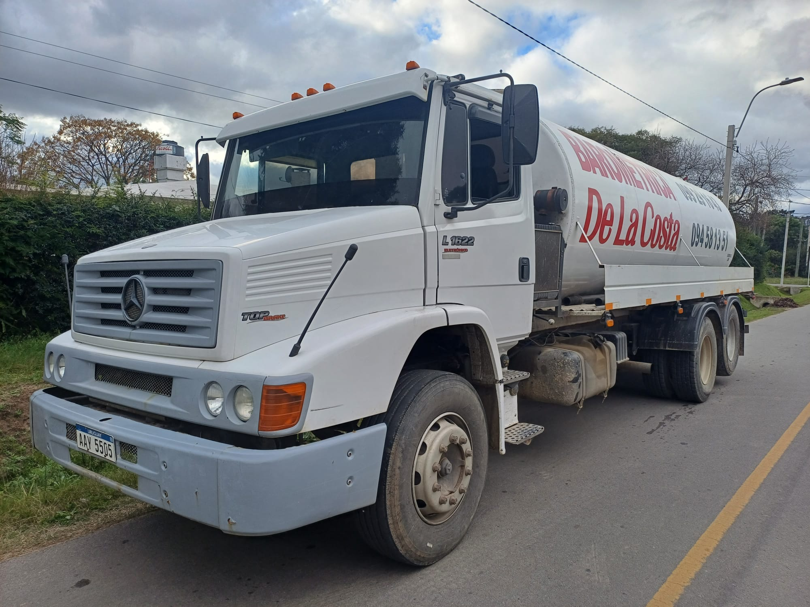
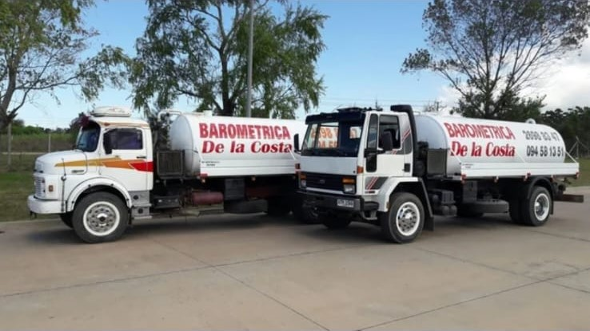

Barométrica de la Costa
Quiénes somos
Zonas
Servicios
Horarios
Contacto
¿Quiénes somos?
Con más de 25 años de experiencia en La Costa de Oro, ofrecemos un servicio barométrico rápido, confiable y con excelente atención al cliente. Contamos con una flota de tres camiones para asegurar respuestas ágiles y efectivas en toda la zona.
Contactenos por Whatsapp
Nuestra flota
 
Zonas de trabajo
Operamos en las siguientes áreas:
Colinas de Solymar
El Pinar
Lagomar
Lomas de Solymar
Medanos de Solymar
Montes de Solymar
Paso Carrasco
Parque Carrasco
Parque Miramar
San José de Carrasco
Shangrilá
Solymar
Servicios
Limpieza de pozos
Limpieza de cámaras
Limpieza de graseras
Horarios de atención telefónica
Lunes a Viernes:
7:30 a 19:00
Sábados:
7:30 a 16:30
Contacto
Consultanos por precios o disponibilidad
WhatsApp
Llamar